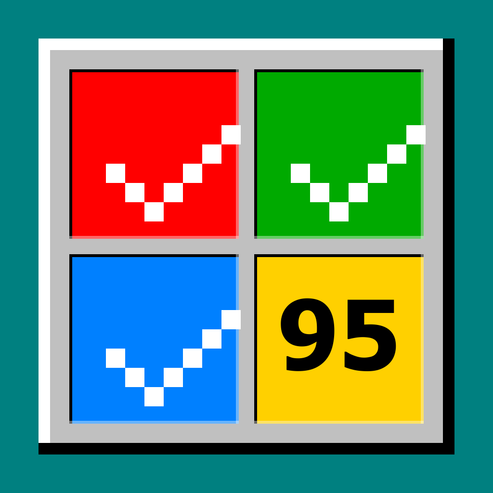

C:\> taskmgr.exe _
Gerencie hábitos
como processos.
Um habit tracker que parece o Gerenciador de Tarefas do Windows 95.
Cada hábito é um .exe rodando no seu sistema operacional pessoal.
Streak quebrado retorna um BSOD. Sem cloud, sem culpa, sem mascote.
> taskmgr para a sua vida
Cada hábito é um .exe rodando
Tabela densa com PID, memória, uptime e status. Rodando, Pendente, Não responde, Suspenso, Concluído — o mesmo vocabulário do Gerenciador de Tarefas, aplicado à sua rotina. Sem motivação. Sem mascote.
> taskmgr para a sua vida
Seu hábito não está respondendo.
Streaks quebrados retornam um BSOD. Quebrar um streak num app fofinho dá culpa; receber um "erro fatal" dá risada — e, paradoxalmente, engaja mais porque é altamente compartilhável. Cada screenshot é conteúdo.
> o cliente já tirou print
Um erro fatal ocorreu em meditar.exe. Streak de 12 dias foi perdido.
A culpa é compartilhada entre o sistema operacional (você) e o subprocesso (também você). Não foi possível recuperar o estado anterior.
Toque qualquer lugar da tela para continuar _
Performance monitor pra sua vida
Consistência, foco, streaks. Em verde-fósforo, sobre fundo preto. Gráficos pixel-art estilo monitor de recursos — sem confete, sem "você arrasou hoje!".
> grafico.exe
Setup wizard. Cinco minutos.
Escolha do catálogo, personalize cada .exe — nome, ícone,
frequência, lembrete, meta — e agende. Sem cadastro. Sem login social.
Sem opt-in de analytics, porque não tem analytics.
> A:\install.exe
Tudo offline. Tudo seu.
Sem cloud. Sem ads. Sem mascote. Seu histórico mora em SQLite no seu telefone — e em lugar nenhum mais. Zero requests para servidor.
> C:\users\voce
Construído pra durar 30 anos
| Runtime | Expo 55 + React Native 0.83 |
| Linguagem | TypeScript 5.9 |
| Persistência | React Context + expo-sqlite (fallback in-memory p/ web) |
| Notificações | expo-notifications — single-source-of-truth |
| Styling | styled-components/native + tema dinâmico por paleta |
| Fontes | Pixelify Sans (UI) + VT323 (mono) |
| Testes | Jest + Testing Library — 88 testes verdes |
4 temas: Classic Win95 · Plum · Hot Dog Stand · High Contrast Black.

Habit Manager 95
Hábitos como processos.
> instalar agora
Design system + screenshots via claude.ai/design · Fontes: Pixelify Sans & VT323 · Licença MIT